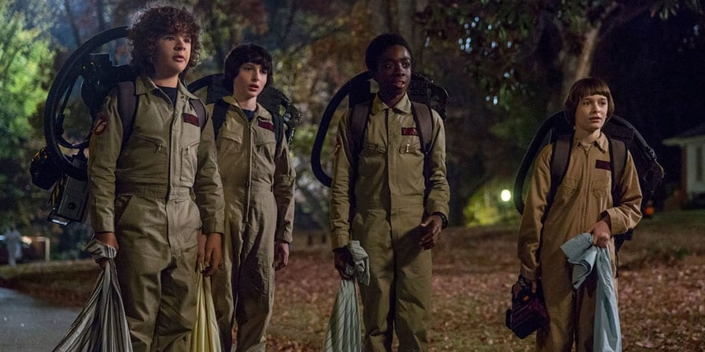

Temporada 2
Resumo
Já na segunda temporada, os protagonistas tentam seguir em frente após tudo o que rolou no ano anterior. Só que uma nova ameaça aparece direto do Mundo Invertido para ameaçar os protagonistas. Além desse novo inimigo, também temos uma novata na escola: Max (Sadie Sink). Ela chega na cidade junto com seu irmão problemático, Billy (Dacre Montgomery).
Enquanto isso, o detetive de Hawkins, Jim Hooper (David Harbour), decide criar Eleven, que sobreviveu aos acontecimentos do final da 1ª temporada, e é nesse ano que descobrimos mais sobre seu passado, sua mãe biológica, que ficou viva, mas teve sequelas após enfrentar uma terapia de eletrochoque, e a existência de uma irmã, a Eight/Kali (Linnea Berthelsen).
Eleven fica escondida na cabana de Hopper e só o próprio Hopper sabe que ela está lá. Cansada dessa realidade, ela foge e, quando volta, aprende a verdade sobre sua história. Depois disso, seus amigos enfrentam um Demodog e Eleven entende que precisa fechar de vez o portal para o Mundo Invertido.
No final desse ano, ela consegue destruir o Monstro das Sombras, que está conectado a Will e ameaçando a todos, e fica com Mike no baile da escola. Só que há uma vítima no meio disso tudo: Bob (Sean Astin), o novo interesse amoroso de Joyce. Também nessa temporada, Nancy termina com Steve e fica com Jonathan.